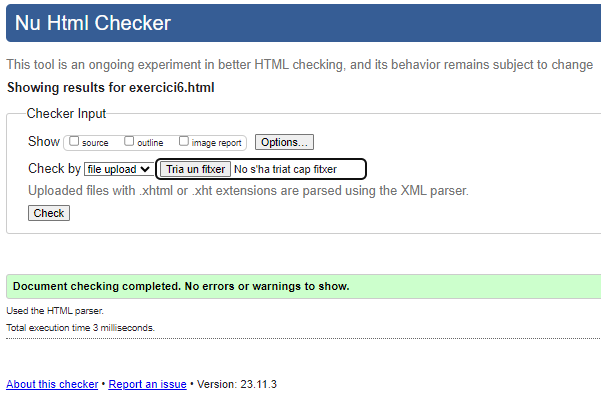

Lista de definicions
- HTTP:
- Hypertext Markup Language, un sistema estandarditzat per etiquetar fitxers de text per aconseguir efectes de tipus de lletra, color, gràfics i hiperenllaços a les pàgines de la World Wide Web.
- URL:
- Uniform Resource Locator (Localitzador de Recursos Uniforme). Una URL no és més que una direccion que és donada a un recurs únic en la Web.
- TCP/IP:
- És un protocol d'enllaç de dades que s'usa en Internet perquè els ordinadors i altres dispositius enviïn i rebin dades.
- Internet:
- Xarxa global de xarxes d'ordinadors la finalitat dels quals és permetre l'intercanvi lliure d'informació entre tots els seus usuaris.
- W3C:
- El World Wide Web Consortium (o W3C) és l'organisme mundial encarregat de desenvolupar les tecnologies i protocols que han fet possible la Web que avui coneixem, una Web única, universal i accessible per qualsevol persona i des de qualsevol dispositiu.
- Mozilla Foundation:
- Fundació Mozilla (estilitzat moz://a) és una organització sense ànim de lucre dedicada a la creació de programari lliure. Té com a missió «mantenir l'elecció i la innovació en Internet».
Tornar a pàgina principal
